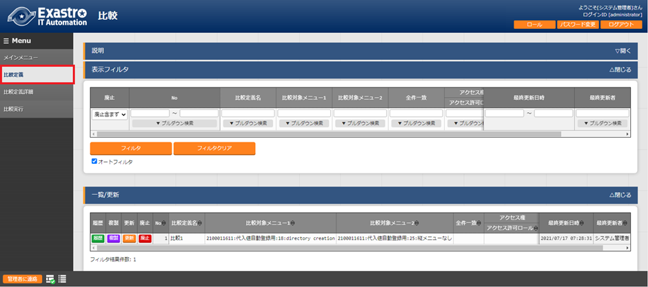
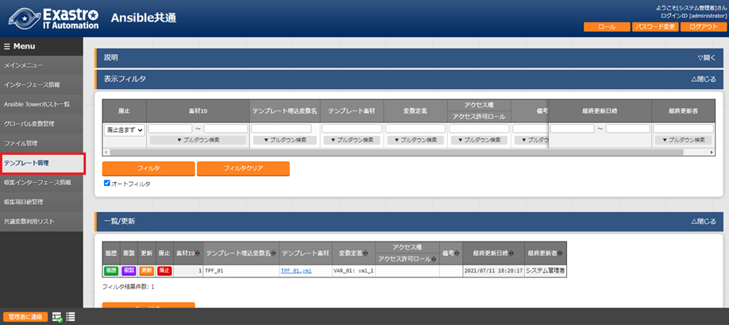
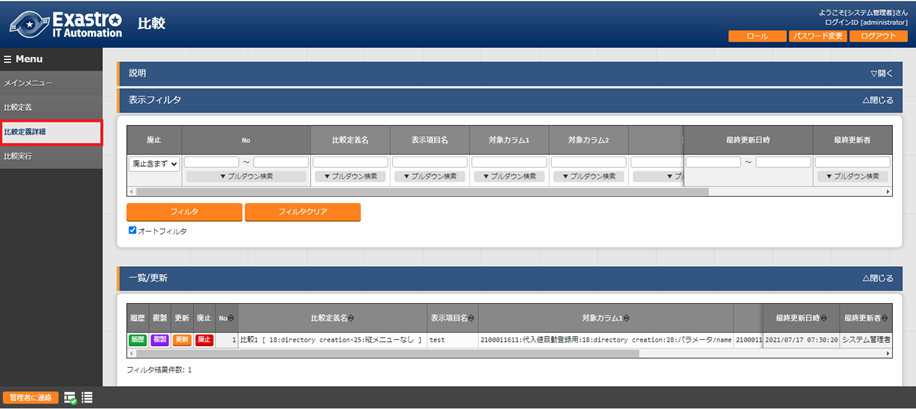
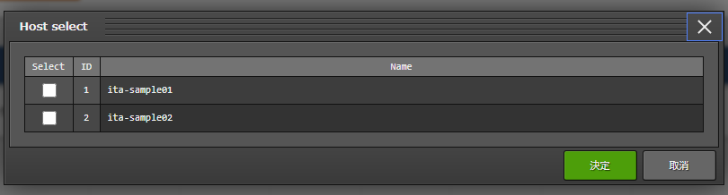
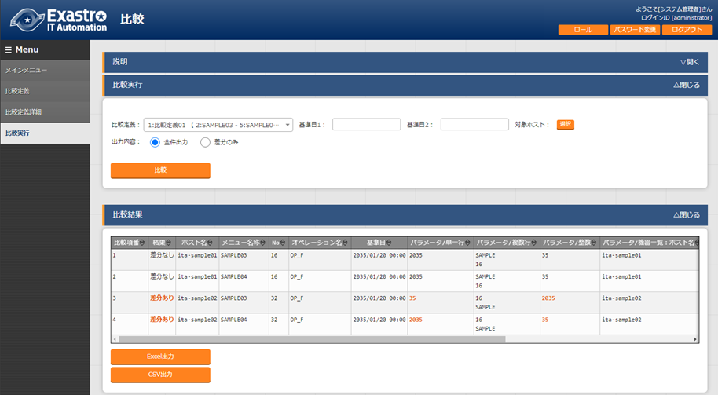
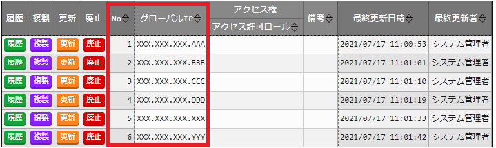
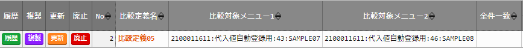
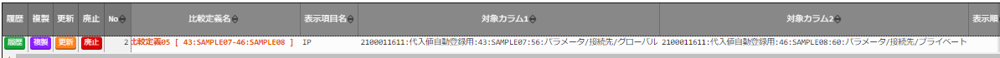

ITA_利用手順マニュアル
比較機能
－第1.9版－
Copyright © NEC Corporation 2021. All rights reserved.
免責事項
本書の内容はすべて日本電気株式会社が所有する著作権に保護されています。
本書の内容の一部または全部を無断で転載および複写することは禁止されています。
本書の内容は将来予告なしに変更することがあります。
日本電気株式会社は、本書の技術的もしくは編集上の間違い、欠落について、一切責任を負いません。
日本電気株式会社は、本書の内容に関し、その正確性、有用性、確実性その他いかなる保証もいたしません。
商標
- LinuxはLinus
Torvalds氏の米国およびその他の国における登録商標または商標です。
- Red Hatは、Red Hat,
Inc.の米国およびその他の国における登録商標または商標です。
- Apache、Apache Tomcat、Tomcatは、Apache Software
Foundationの登録商標または商標です。
Ansibleは、Red Hat, Inc.の登録商標または商標です。
AnsibleTowerは、Red Hat, Inc.の登録商標または商標です。
その他、本書に記載のシステム名、会社名、製品名は、各社の登録商標もしくは商標です。
なお、® マーク、TMマークは本書に明記しておりません。
※本書では「Exastro IT Automation」を「ITA」として記載します。
目次¶
はじめに¶
本書では、ITAの機能および操作方法について説明します。
比較機能概要¶
本章では比較機能について説明します。
比較機能について¶
比較機能とは、ITAのメニュー作成機能で作成したパラメータシートを比較し、差分を出力する機能です。
本機能は、「パラメータシート（ホスト/オペレーションあり）」を対象としています。
パラメータシートの詳細については、「利用手順マニュアル メニュー作成機能」を参照してください。
アクセス権/アクセス許可ロールについては、「利用手順マニュアル データレコード毎のロールベースアクセス制御」を参照してください。
比較機能全体概要図¶
以下は、比較機能実行までの全体の概要図です。
比較機能処理概要図¶
以下は、比較機能の処理の概要図です。

{kind=link}
比較定義概要図¶
{kind=link}
{kind=link}
{kind=link}
{kind=link}
パラメータシートの比較について¶
比較機能は、比較定義、比較定義詳細にて、紐付された対象パラメータシート、項目情報を元に比較を実施します。
比較機能の動作要件¶
ITAで以下の設定がされていること。
ITA インストーラにて、「createparam」が選択され、インストールされている
メニュー定義/作成にて、作成対象「パラメータシート（ホスト/オペレーションあり）」が作成されている
比較定義にて、比較対象となるパラメータシート同士の紐づけ設定がされている。
比較定義詳細にて、比較対象となるの項目同士で紐づけ設定がされている。（比較定義の設定状態によっては、設定不要）
比較実行パラメータ
以下をパラメータとして設定し比較を実行できます。
比較定義については、後述の「5.1.1比較定義」を参照。
表 1.2‑1 比較実行パラメータ
パ ラメータ |
説明 |
** 入 力 ** ** 必 須 ** |
入 力形 式 |
制 約事項 |
|---|---|---|---|---|
比較定義 |
比較定義名を選択 |
〇 |
リ スト 選択 |
|
基準日1 |
比較定義にて 比較対象メニュー1で選択したメ ニューの基準日となる日時を入力 |
手動 入力 |
||
基準日2 |
比較定義にて 比較対象メニュー2で選択したメ ニューの基準日となる日時を入力 |
手動 入力 |
||
対象ホスト |
対象ホストを選択 デフォルト：対象の絞り込 みなし。（比較対象を全件表示） |
リ スト 選択 |
比較機能で対象項目について¶
比較対象項目¶
比較対象のパラメータシートの項目¶
比較機能で使用可能なパラメータシートの項目について以下となります。
表 2.1‑1 パラメータシートの比較対象項目
項目種別 |
制約事項 |
|---|---|
文字列(単一行) |
|
文字列(複数行) |
|
整数 |
|
小数 |
|
プルダウン選択 |
選択したリストのIDでの比較を行います。 アクセス権がない場合、ID変換失敗(X)表記となります。 |
ファイ ルアップロード |
ファイルアップロード同士で比較する場 合、ファイル名、ファイルの内容で比較を実施します。 |
リンク |
※アクセス権については、「利用手順マニュアル データレコード毎のロールベースアクセス制御」を参照してください。
比較可能な対象項目の組み合わせ¶
比較可能なパラメータシートの項目の組み合わせの一覧になります。
表 2-1 比較対象項目の比較パターン組み合わせ
** 文字 列** (単 一行 )* |
文字 列* ** (複数 行)** |
整 数 |
小 数 |
** プルダ ウン** ** 選択** |
ファ イル ア ップロ ード |
** リン ク** |
|
|---|---|---|---|---|---|---|---|
文 字列 (単 一行) |
〇 |
〇 |
〇 |
〇 |
〇※1 |
〇※2 |
〇 |
文 字列 (複 数行) |
〇 |
〇 |
〇 |
〇 |
〇※1 |
〇※2 |
〇 |
整数* |
〇 |
〇 |
〇 |
〇 |
〇※1 |
〇※2 |
〇 |
小数* |
〇 |
〇 |
〇 |
〇 |
〇※1 |
〇※2 |
〇 |
プルダ ウン* 選択* |
〇※1 |
〇※1 |
〇※1 |
〇※1 |
〇※1 |
〇※1※2 |
〇※1 |
ファ イル ア ップロ ード |
〇※2 |
〇※2 |
〇※2 |
〇※2 |
〇※1※2 |
〇※3 |
〇※2 |
リ ンク |
〇 |
〇 |
〇 |
〇 |
〇※1 |
〇※2 |
〇 |
※1 プルダウン選択について、選択したリストのIDで比較を行います。
比較実行例「6.1.1プルダウン使用したパラメータシートの比較例」を参照してください。
※2 対象の値とファイル名で比較します。
※3 ファイル名、ファイルの内容のどちらか片方で差分がある場合、差分ありとなります。
比較のメニュー構成¶
本章では、比較メニュー構成について説明します
メニュー/画面一覧¶
比較のメニュー一覧を以下に記述します。
表 3-1比較画面一覧
N o |
メニュー グループ |
メニュー・画面 |
説明 |
|---|---|---|---|
1 |
比較 |
比較定義 |
比 較実行する定義名の作成を行います。 比較対象の パラメータシートの紐付を行います。 |
2 |
比較定義詳細 |
比較するパラメータシー トの項目について、パラメータシート の項目単位での紐付設定を行います。 |
|
3 |
比較実行 |
比較定義、比較定義詳細で設定 した、設定を元に比較を実施します。 |
比較機能の利用手順¶
比較機能の利用手順について説明します
作業フロー¶
比較機能の実施における標準的なフローは以下のとおりです。
比較機能実行フロー¶
以下は、パラメータシートの比較を実行するまでの流れです。
**¶
作業フロー詳細と参照先
パラメータシートへのデータ登録
パラメータシートの作成」にて作成したパラメータシートへデータを登録します。
詳細は 「利用手順マニュアル_メニュー作成機能」を参照してください。
比較定義の作成
[比較] - [比較定義]画面から、比較定義の作成を行います。
詳細は「5.1.1比較定義」を参照してください。
比較イの登録
[比較] - [比較定義詳細]画面から、比較定義詳細の設定を行います。
詳細は「5.1.2比較定義詳細」を参照してください。
比較実行
[比較] - [比較実行]画面から、パラメータシートの比較を行います。
詳細は「5.1.3比較実行」を参照してください。
比較機能・操作方法説明¶
本章では、比較機能で利用する各メニューについて説明します。
比較¶
比較定義¶
[比較定義]では、比較事項時に、使用する定義情報（対象のパラメータシートの紐付）の登録、更新を行います。

{kind=link}
図 5.1‑1サブメニュー画面（比較定義）
「一覧」-「更新「一覧」-「登録開始」ボタンより、比較定義の登録を行います。

{kind=link}
図 5.1‑2 登録画面（比較定義）
比較定義画面の項目一覧は以下のとおりです。
表 5.1‑1 登録画面項目一覧（比較定義）
項目 |
説明 |
** 入 力 ** ** 必 須 ** |
入 力形 式 |
制約事項* |
|---|---|---|---|---|
比較定義名 |
比較定義名を入力します。 |
〇 |
手動 入力 |
|
比較対 象メニュー1 |
対象のメニューを選択 します。 |
〇 |
リ スト 選択 |
|
比較対 象メニュー2 |
対 象のメニューを選択します。 |
〇 |
リ スト 選択 |
|
全件一致 |
比較対象メニュー1, 比較対象メ ニュー2の項目名が完全に一致 している場合に選択します。 |
選択 |
※1 |
|
備考 |
自由記述欄です。 |
手動 入力 |
※1全件一致を選択する場合、比較定義詳細の設定が不要になります。
選択したパラメータシート同士の項目名が完全に一致している必要があります。
比較定義詳細¶
[比較定義詳細]では、比較対象の項目名とパラメータシートの項目同士の紐付設定を行います。

{kind=link}
図 5.1‑3サブメニュー画面（比較定義詳細）
「一覧」-「登録開始」ボタンより、比較項目の登録を行います。

図 5.1‑4 登録画面（比較定義詳細）
比較項目値管理画面の項目一覧は以下のとおりです。
表 5.1‑1 登録画面項目一覧（比較定義詳細）
項目 |
説明 |
** 入 力 ** ** 必 須 ** |
入力 形式 |
制約 事項 |
|---|---|---|---|---|
比 較定義名 |
比較定義を選択 |
〇 |
リス ト選択 |
※1 |
表 示項目名 |
表示項目名を入力します。 比較結果で出力さ れる先頭行の項目名となります。 |
〇 |
手 動入力 |
|
対 象カラム1 |
対象カラムを選択します |
〇 |
リス ト選択 |
※2 |
対 象カラム2 |
対象カラムを選択します |
〇 |
リス ト選択 |
※3 |
表示順 |
表示順を選択します。 |
※4 |
||
備考 |
自由記述欄です。 |
※1 比較定義にて全件一致が選択されていないものがリストに表示されます。
※2 比較定義にて登録した比較対象メニュー1にある項目から選択できます。
※3 比較定義にて登録した比較対象メニュー2にある項目から選択できます。
※4 入力されない場合、比較結果出力時、左から比較定義詳細のID順で出力されます。
比較実行¶
[比較実行]では、比較定義、比較定義詳細で設定した定義情報を元に、パラメータシートの比較を行います。
「5.1.1比較定義」で登録した比較定義の一覧が表示されます。
比較ボタンを押下すると、入力されたパラメータを元に対象のメニュー、項目に対して比較が実行されます。

図 5.1‑5比較実行画面（パラメータ入力）
{kind=link}
図 5.1‑6ホスト一覧画面（比較実行：対象ホスト）
表 5.1‑1 比較実行の項目一覧
項目 |
説明 |
** 入 力 ** ** 必 須 ** |
入力 形式 |
制 約事 項 |
|---|---|---|---|---|
比較定義 |
比較定義を選択します。 |
〇 |
リス ト選択 |
|
基準日1 |
比較対象 メニュー1の基準日を指定します。 |
手 動入力 |
※1 |
|
基準日2 |
比較対象 メニュー2の基準日を指定します。 |
手 動入力 |
※1 |
|
ホスト |
選択ボタン 押下後、ホストをを選択します。 対 象ホストの一覧が表示されます。 |
選択 |
※2 |
|
出力内容 |
出力内容について選択します。 全件出力：結果を 全件出力します。（デフォルト） 差分のみ： 差分ありの結果のみ出力します。 |
選択 |
||
比較 |
選 択されたパラメータを元に比較を 実行し、比較結果を出力します。 |
※1 基準日へ入力した場合、入力した日時の時点の最新のデータで比較実行します。
入力しない場合、最新の基準日のデータで比較実行します。
※2 初期状態ではホストの絞り込みはされていません。
比較定義内で紐付された対象メニューにある全ホストの比較結果を出力します。
比較ボタン押下後、比較結果の一覧と、ファイル出力（Excel、Csv）ボタンが表示されます。
表示順について、ホスト毎に、対象メニュー1、対象メニュー2の順で表示されます。

{kind=link}
図 5.1‑7比較実行画面（比較結果）
表 5.1‑1 比較実行の出力一覧
項目 |
説明 |
制約事項 |
|---|---|---|
比較項番 |
比較結果の項番。 |
|
結果 |
比較実行結果を表示します。 差分あり/差分無し |
※1 |
ホスト名 |
対象のホスト名を表示します。 |
|
メ ニュー名称 |
対象のメニュー名を表示します。 |
|
No |
比較 対象メニュー上のNoを表示します。 |
|
オペレ ーション名 |
オペレーション名を表示します。 |
|
基準日 |
基準日を表示します。 |
|
比較項目 |
対象項目を表示します。 |
※1 |
Excel出力 |
比較結果をExcelで出力します。 |
|
Csv出力 |
比較結果をCsvで出力します。 |
※1 差分がある値について、赤文字で強調表示します。
付録
参考
プルダウン使用したパラメータシートの比較例¶
プルダウン使用時の比較例は以下となります。
比較対象パラメータシート、プルダウン選択の構成情報について

図 6.1‑1比較対象パラメータシート（メニュー作成・定義）
{kind=link}
図 6.1‑2プルダウン参照先[データシート:グローバルIP]

図 6.1‑3プルダウン参照先[データシート:プライベートIP]
比較対象、比較定義情報について
比較対象を以下の赤枠-青枠を対象とした場合
グローバル：グローバルIP（データシート）を参照
プライベート：プライベートIP（データシート）を参照
{kind=link}
{kind=link}
図 6.1‑4比較対象パラメータシート
{kind=link}
図 6.1‑5比較定義設定例
{kind=link}
図 6.1‑6比較定義詳細設定例
**¶
比較実行結果について
{kind=link}
図 6.1‑7比較実行結果
プルダウンの参照先が異なっている為、※1、※2のような、パターンが発生する場合があります。
※1について、参照先のNoが異なっているが、表示内容は同一の場合、差分と見なす
※2について、参照先のNoが同一であるが、表示内容は異なっている場合、差分と見なさない。